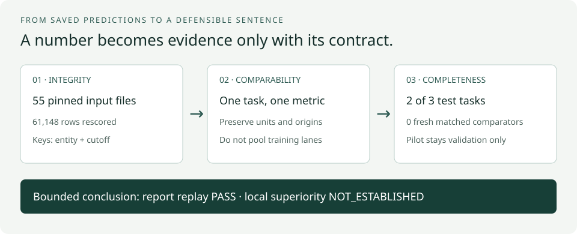
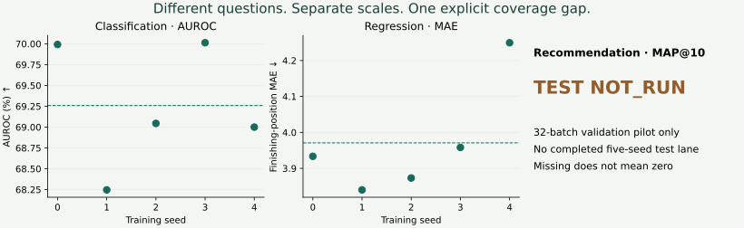

Year 4 · Quarter 4 · Lesson 154
Portfolio synthesis: make every claim auditable
1 · Three entries are not yet three completed experiments¶
Reading route. Trace each score → preserve task units → check comparability → count completed tasks → defend the missing result.
Your win: turn separate experiment folders into one report whose conclusions survive an evidence audit. Read the core lesson in about 20 minutes; complete the notebook and written defense in a separate session.
L151 established a classification entry; L152 added a regression entry. L153 supplied a recommendation pipeline and a measured budget stop. Each entry answers a different prediction question. None, by itself, tells us which cross-task claim is justified.
The new problem is composition: a correct score can become a misleading report when we mix protocols, units, or levels of completion. A validation pilot is still useful evidence, but it cannot fill an empty test cell. Our mission is to make the RDL thesis testable; an explicit missing comparison is more useful than an unsupported victory.
Prerequisites: complete (entity, cutoff) query keys from L124; validation-only selection from L135/L151; seed variation from L136; MAE versus ranking metrics from L152–153. This is a reporting lesson, not a new architecture or a new training experiment.
2 · Trace one claim back to its inputs¶
Vocabulary reminder. A lane is one declared experiment procedure, such as the fixed reference recipe or a validation-selected recipe. Provenance records where evidence came from. A manifest lists the files being checked, and a SHA256 digest is a content fingerprint used to detect changes. FE means feature engineering: explicitly constructing model inputs. ddof=1 requests the sample-standard-deviation denominator n−1.
A report cell needs a task, split, population, metric, unit, evaluation rule, training lane, seed set and provenance. The minimal route is:


For study-outcome reference test AUROC, follow seeds 0–4 → five complete 20-epoch histories → first validation maximum in each history → 825 keyed test predictions per seed → five AUROCs → mean and sample SD. The course-selected seeds 10–14 follow a separate frozen selection procedure. Even though the selected learning rate equals the reference rate, their results stay in separate lanes. Choosing the nicer test mean now would change the reporting rule after seeing the outcome.
The replay verifies a frozen SHA256 manifest, deliberately reverses prediction order, realigns by both parts of the query key, recomputes metrics and checks the saved scores. Hash agreement establishes that the audited bytes have not changed; it does not establish that they are the paper authors' historical bytes. The input manifest pins the actual files consumed.
Lab task 1 — summarize_runs. Require exactly the declared distinct seeds and one complete contract. Reject a partial epoch budget, mixed lane, changed candidate protocol, nonfinite metric or missing seed. Return the mean and sample SD using ddof=1. Run this function on the real rows, not just toy fixtures.
3 · Read the measured table before interpreting it¶
| Task / metric | Local test mean ± sample SD | Completed seeds | Published comparator (context only) | Fresh FE / tree |
|---|---|---|---|---|
| rel-trial/study-outcome / AUROC | 69.2588 ± 0.7489% | 5/5 | Raw-table LightGBM: 70.090% | NOT_RUN / NOT_RUN |
| rel-f1/driver-position / MAE | 3.9708 ± 0.1626 positions | 5/5 | Raw-table LightGBM: 4.170 positions | NOT_RUN / NOT_RUN |
| rel-trial/site-sponsor-run / MAP@10 | NOT_RUN — INCOMPLETE | 0/5 | Past Visit (ranking heuristic): 17.310% | NOT_RUN / NOT_RUN |
AUROC and MAP are stored as fractions and displayed as percentages; MAE is measured in finishing-position units. A missing score is null/NOT_RUN, never zero. The published recommendation comparator shown here is Past Visit, not LightGBM or manual FE. The paper's GraphSAGE result is also distinct from its ID-GNN result. Primary reading: RelBench v1 Tables 6–8.


Replay result: 61,148 rows independently rescored: 8,925 classification reference, 8,925 classification selected, 6,295 regression and 37,003 recommendation pilot rankings. All 15 completed-fit validation checkpoint selections passed. The primary test means are 69.2588% AUROC and 3.9708 MAE; both fall inside their previously frozen descriptive paper bands. That is not statistical equivalence or historical reproduction.
The separate classification course-selected lane is 68.4570 ± 1.3502% AUROC. It does not become the reference result. Recommendation validation MAP@10 is 1.050815% after 32 training batches; no test result exists. Machine-readable replay.
The five-seed SD describes variability over training seeds on the same evaluation population. It is not a confidence interval for performance on new databases. The L151 reference and course-selected seed sets are not paired runs merely because each has five scores. Do not compute a paired test by lining up their row numbers.
Our portfolio spans two databases and three selected tasks. It is not a random sample of all relational problems. The broad curriculum mentions five tasks; this synthesis covers the three entry artifacts prepared so far, and even the minimum three-completed-task requirement is unmet. Adding older results would require a new declared inclusion rule and comparability audit.
4 · A comparable difference needs a direction and an evidence label¶
Consider an explicitly synthetic MAE example: model 3, baseline 4. Benefit is 4 − 3 = +1 position, or 100 × 1/4 = 25% relative to that baseline. For an AUROC example, model .70 and baseline .60, benefit is .70 − .60 = .10, displayed as 10 percentage points. A percentage-point difference is not a relative percentage improvement.
Use model − baseline for higher-is-better metrics and baseline − model for lower-is-better metrics. If the baseline is zero, the relative percentage is undefined. Even after orienting signs, one position and ten AUROC points cannot be averaged into a meaningful raw score. Relative changes remove physical units but still depend strongly on the chosen baseline; they do not make this incomplete portfolio suitable for a single headline average.
The widget uses fixtures, never edits the measured report. Switch evidence origin and completeness while holding scores fixed. Observe that the claim changes even when the numerical gap does not. Its “matched local” case assumes the same keyed population, evaluation protocol and a predeclared fair comparison. It remains descriptive, not a significance claim.
Lab task 2 — compare_entries. Verify task, split, units and direction. Local comparisons must also share the population and evaluation protocol. Compute the oriented gap, but label a published comparator PUBLISHED_CONTEXT_ONLY and leave its local winner NOT_ESTABLISHED. Raw-table trees and manually engineered relational features are different baselines; neither label is a synonym for the other. The paper describes its manual-FE study separately in Section 6.
For the actual report, classification is numerically below the published raw-table tree result and regression is numerically above it in benefit direction. Neither comparison establishes a fresh local win or loss: we have not executed those baselines under matched local conditions. This is the specific gap L155's planned manual-FE comparison will address; human-effort measurements also need their own protocol.
5 · Reproduce the report, preserve the unfinished experiment¶
Named experiment: L154 RelBench portfolio evidence replay. The default CPU lane verifies 55 pinned inputs and recomputes all saved validation/test predictions for the selected lanes. The executable functions are visible in the notebook and in the reporting module; the replay adapter supplies the real records.
# From the relational repository; no fitting, downloads or cloud dispatch.
.venv/bin/python labs/_check_l154.py
.venv/bin/python labs/_replay_l154.py
.venv/bin/python labs/_audit_l154.py
The standalone notebook embeds the same input packet and verifies its hashes in a newly created temporary directory. Its three learner functions are passed directly into the real replay. It exports your rebuilt report and leaves your defense pending. Re-executing an author packet demonstrates a reporting skill; it does not create new model fits or prove learner mastery automatically.
Full reproduction remains task-specific. The L151/L152 full-training recipes and evidence are linked in their ledgers. L153's full five-seed, 20-epoch, full-catalog recipe remains runnable, but its recorded budget decision is STOP: approximately **$41.23 compute before overhead**, against the approved $10 total cap. This projection is a scenario based on the pilot, not a guaranteed bill or a mathematical lower bound. L154 incurs $0 additional cloud spend and does not restart training.
The upstream label audits are retained. L154 does not rerun source SQL, graph construction, checkpoint inference or training. It uses L151's pinned task table, L152 targets already checked against the archived labels, and L153's pinned relevance sets. Source nonfinite-gradient observations remain unresolved. Temporal checks do not recover unobserved feature-arrival histories. Historical identity and feature-arrival legality remain NOT_ESTABLISHED.
Lab task 3 — portfolio_verdict. Count each required task once. Report two completed test tasks out of three and zero fresh matched comparator tasks. A published comparison cannot increase the local comparator count; a recommendation pilot cannot increase completed-test coverage. Emit NOT_ESTABLISHED for local superiority and keep learner status PENDING_WRITTEN_DEFENSE.
6 · Exit: defend the missing cell¶
Open the worked notebook · Download student lab · Teacher solution · Generated report · Report JSON · Quick reference · Reproduction contract.
Write 250–400 words answering: What has been reproduced? Which baseline has actually been run locally? Why can you not average the three metrics? What does seed SD quantify? Which missing experiment would change your conclusion? Include one measured number and its unit, and defend why the third test cell stays empty.
Score each dimension 0–2: provenance, comparable units, completeness, uncertainty, bounded conclusion. Readiness requires 8/10 with no zero, reviewed by the teaching agent. Passing author checks does not grant this score. Tomorrow, reconstruct the two difference formulas from memory; in one week, rebuild the coverage verdict without looking at the report.
Ask the agent follow-up questions about any unclear comparison, rejected row or evidence boundary. Bring your exported report and written defense so we can assess your reasoning, not only whether the notebook ran.